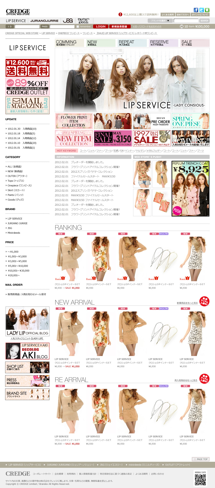

CREDGE Official web store
- Category
- ファッションECサイト
- Year
- 2013年
- Project
- WEBサイトリニューアル・運営
- Part
- 画面設計 / UIデザイン / フロントエンド実装
- Tool
- Photoshop / Illustrator / Dreamweaver / HTML / CSS / Javascript
約20ページ規模のファッションECサイトリニューアル・更新を担当。
自社システム環境下でデザイン・実装を行い、特集LP制作やバナー作成など運用まで対応。

背景・課題
既存ECサイトのシーズンデザイン刷新が課題。 サイト全体のデザイン見直しを実施。
トップ・カテゴリ・商品一覧・特集LPなど約20ページを制作。 クライアントと毎週行われる企画会議に参加し、キャンペーンページ制作や更新対応も継続して担当。
制作フロー
01
情報設計
商品を「探す → 比較する → 詳細を見る」
流れに整理。
02
ワイヤーフレーム
トップ・一覧・詳細ページの
購入導線を明確化。
03
デザイン設計
ブランド世界観を保ちつつ、
商品が引き立つレイアウトへ刷新。
04
実装
既存EC仕様に合わせて実装。
更新効率を考慮した構造設計。
意識したこと
売場視点の設計
商品が選びやすく比較しやすい構成を重視。
更新効率を考慮した構造
シーズン展開を想定した設計。
ビジュアルと導線の両立
世界観を保ちつつ、 購入導線を妨げないレイアウト設計。
成果
- 商品詳細ページへの導線を整理し、遷移の流れを改善。
- 主力商品の訴求が明確になり、特集展開を強化。
- 更新しやすい構造により、継続的な運用体制を構築。
ふりかえり・改善点
制作だけでなく運用まで関わることで、 長期的な視点で設計する重要性を実感しました。
今後はデータ分析も踏まえながら、 改善提案まで含めた設計をさらに強化していきたいと考えています。